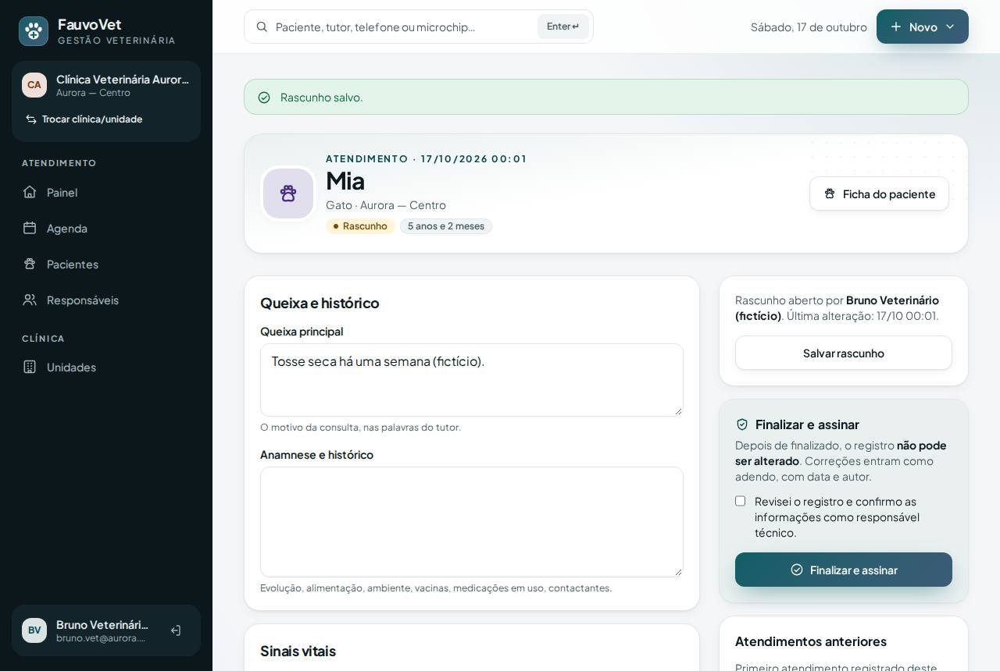
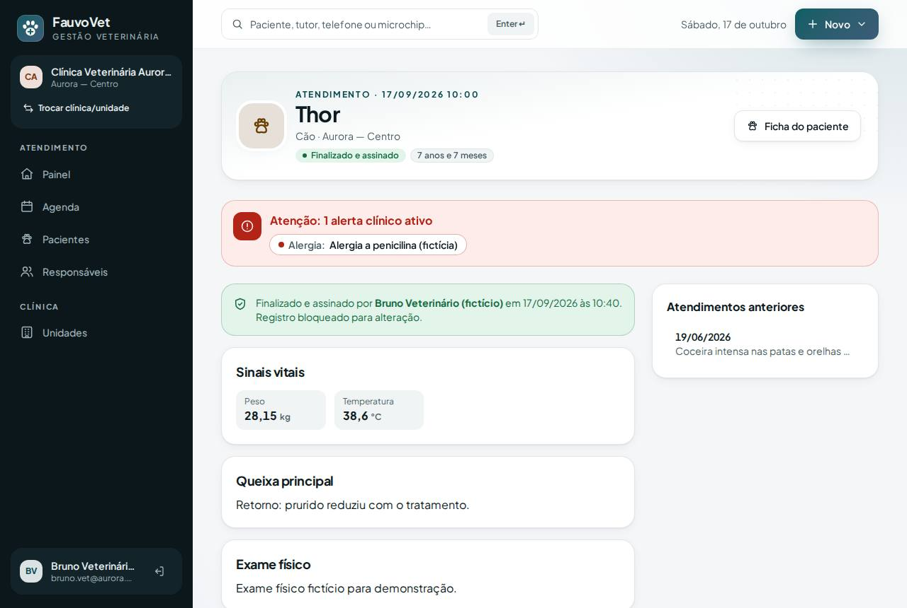
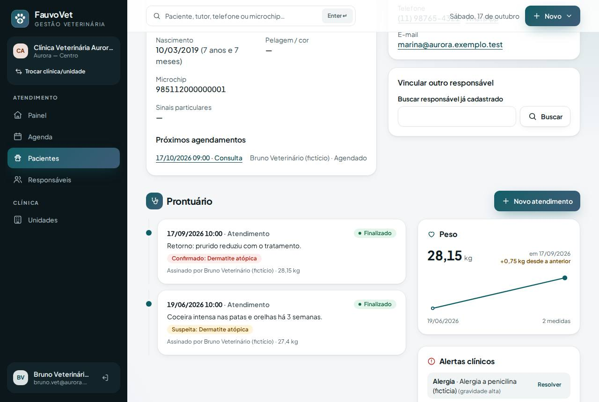
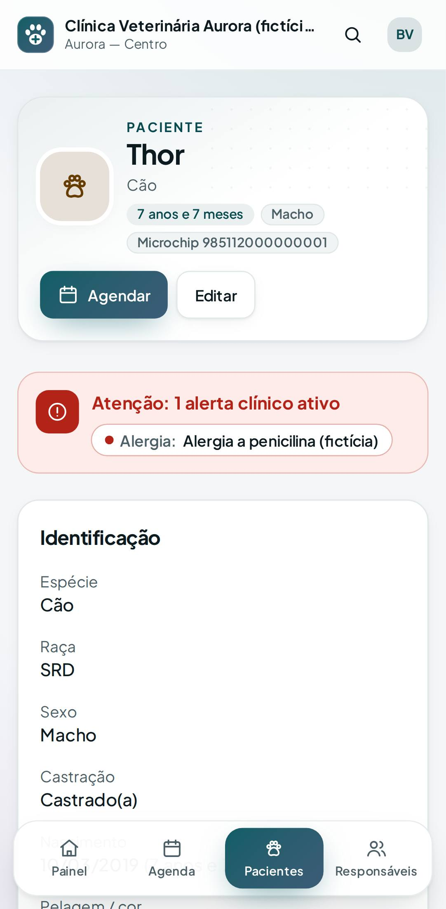
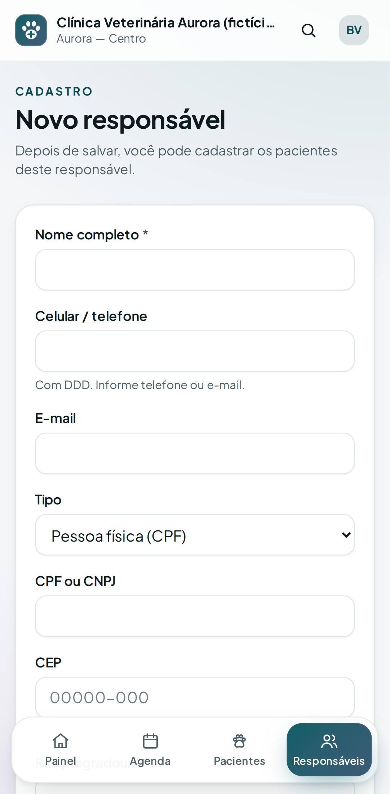

Prontuário com assinatura e adendos, mais os ajustes de cadastro pedidos
ID: 2026-10-17-prontuario · Data: 17/10/2026 · Versão: 0.6.0 · Módulos: D. Atendimento clínico e prontuário · B. Cadastros · §7 UX · Estado: implementado e testado localmente; publicação a cargo do proprietário (seção 7)
1. Objetivo
Ajustes pedidos pelo proprietário nas telas que já existiam:
- tirar "(opcional)", porque o
*já indica o que é obrigatório; - tirar o código da cor (
#…) da lista de tipos de atendimento; - preencher a idade ao informar a data de nascimento;
- preencher rua e cidade pelo CEP;
- UF como lista de seleção.
Atendimento/prontuário: registrar a consulta de forma confiável e rastreável. O rascunho é editável; ao finalizar, o veterinário assina e o registro fica bloqueado; correções viram adendos. Alertas clínicos e peso ficam em destaque, e só a equipe clínica vê, com cada acesso registrado.





2. O que mudou
Ajustes pedidos
- "(opcional)" removido de todos os rótulos: paciente, responsável, cadastro de clínica, convite e agenda.
- Tipos de atendimento: a lista mostra só nome e duração. A cor é escolhida num seletor visual, sem digitar código.
- Data de nascimento → idade: ao escolher a data, "anos" e "meses" se preenchem na hora. Se você digitar a idade, a data é limpa e o sistema grava uma data estimada (com "~").
- CEP → endereço:
- ao digitar os 8 dígitos, o sistema preenche rua, bairro, cidade e UF, formata o CEP e leva o cursor para o Número;
- o responsável ganhou os campos Número, Complemento e Bairro;
- a consulta é feita pelo servidor do FauvoVet no serviço público ViaCEP (detalhes na seção 9);
- se o serviço estiver fora, aparece "Não foi possível consultar o CEP. Preencha manualmente." e o cadastro continua normalmente.
- UF em lista ("SP — São Paulo"…) em responsáveis e unidades, validada no servidor.
Atendimento/prontuário
- Como abrir:
- na Agenda, Iniciar atendimento já abre o prontuário em rascunho, ligado ao agendamento;
- sem agendamento, use Novo atendimento na ficha do paciente.
- Ficha do atendimento:
- queixa principal, anamnese e histórico;
- sinais vitais: peso, temperatura, FC, FR, TPC, escore corporal 1–9, dor 0–10, mucosas e hidratação. Aceita vírgula decimal;
- exame físico;
- hipóteses e diagnósticos, cada um com situação Suspeita, Confirmado ou Descartado e código opcional;
- conduta e plano terapêutico, orientações ao tutor.
- Salvar rascunho: a equipe clínica, inclusive o assistente, pode editar.
- Finalizar e assinar:
- só o médico-veterinário, depois de marcar "Revisei o registro e confirmo…";
- o registro fica bloqueado, inclusive contra alteração direta no banco pelo sistema;
- o peso vai para o histórico, e o agendamento vira "Concluído".
- Adendos no atendimento finalizado: correções e complementos com data e autor, que não podem ser editados depois.
- Prontuário na ficha do paciente:
- faixa vermelha de alertas clínicos (alergia, condição crônica, medicação contínua, comportamento), que também aparece no atendimento;
- gráfico de peso, com a variação desde a medida anterior;
- linha do tempo dos atendimentos, com os diagnósticos coloridos por situação;
- adicionar e resolver alertas.
- Painel: "Prontuários em rascunho", para não ficarem sem assinatura.
- Quem vê:
- titular, veterinário e assistente clínico;
- recepção, financeiro, estoque e banho/tosa não veem nada clínico, nem os alertas;
- cada abertura de prontuário fica registrada (quem, quando, qual), sem o conteúdo. Esses acessos não aparecem na "Atividade recente" do painel.
Arquivos
- Migrações (2):
2026_10_16_000002_add_address_details_to_guardians(aditiva);2026_10_16_000003_create_clinical_record_tables(encounters,encounter_diagnoses,encounter_addenda,patient_weights,patient_alerts, todas com FKs compostas).
- Código:
app/Services/ClinicalRecordService.php,PostalCodeLookup.php;- controllers
EncounterController,PatientAlertController,PostalCodeController; - models
Encounter,EncounterDiagnosis,EncounterAddendum,PatientWeight,PatientAlert; App\Clinical\ClinicalRecordLocked,App\Support\BrazilianStates.
- Permissões:
clinical:sign(veterinário). O assistente clínico ganhouclinical:write(rascunho). - Telas:
encounters/*,patients/_clinical,_alerts-banner,_weight-chart(SVG próprio, sem biblioteca). Componentes AlpinebirthAgeecepLookup. - Seed fictício: 3 atendimentos finalizados (Thor ×2 com dermatite suspeita → confirmada; Jabu com suspeita renal), histórico de peso e alergia a penicilina do Thor.
- Testes:
ClinicalRecordTest(13, sendo 3 de isolamento),AddressTest(4), E2Eclinical.spec.ts, E2E da agenda atualizado (Iniciar → prontuário → assinar → Concluído), E2E de idade/CEP, axe no prontuário. - Documentação: ADR-013, DATA_MODEL, SECURITY, FEATURE_PARITY, ROADMAP.
Dependências novas: nenhuma.
3. Pré-requisitos
Os mesmos de antes. O servidor precisa conseguir acessar https://viacep.com.br para o CEP automático; sem isso, o preenchimento fica manual.
Git Bash/macOS: NOT RUN.
4. Passo a passo (no seu computador)
cd ~/code/fauvovet→git pull --ff-only→pnpm db:startpnpm db:migrate→ esperado: as duas migrações listadas comDONEpnpm db:seed→pnpm dev→ entre comobruno.vet@aurora.exemplo.test(veterinário).
5. Como testar
Automático
pnpm verify --e2e
pnpm test:tenant-isolationManual
- Ajustes:
- em Pacientes → Novo paciente, escolha uma data de nascimento: a idade se preenche;
- em Responsáveis → Novo, digite o CEP
01001000: rua, bairro, cidade e UF se preenchem (com internet); - em Tipos de atendimento, a lista não mostra mais o código da cor.
- Como Bruno (veterinário), abra o Thor:
- aparece a faixa "Alergia a penicilina";
- o prontuário mostra 2 atendimentos (dermatite Suspeita → Confirmado) e o gráfico de peso.
- Na Agenda, no Thor de hoje: Registrar chegada → Iniciar atendimento. O prontuário abre em rascunho.
- Preencha a queixa, os sinais vitais e um diagnóstico, e clique em Salvar rascunho. Depois marque a confirmação e clique em Finalizar e assinar:
- aparece "Finalizado e assinado por…";
- a edição some e fica só o adendo;
- na Agenda, o Thor fica "Concluído".
- Registre um adendo: ele aparece com data e autor, sem opção de editar.
- Como Carla (recepção), abra o Thor: nada de prontuário nem de alerta. O endereço
/atendimentos/01K7FV0000000000000ENA0002responde 403. - Teste de isolamento, como Diana (clínica B): o mesmo endereço responde 404, e no Jabu só aparece o prontuário da clínica B.
6. Performance e usabilidade
| Rota (p95, local) | Tempo |
|---|---|
| GET /pacientes/{id} com prontuário (alertas, peso, linha do tempo + auditoria de acesso) | 63,2 ms |
| GET /atendimentos/{id} (+ auditoria de acesso) | 55,1 ms |
| GET /painel (agora com "rascunhos") | 55,1 ms |
| Demais rotas | sem mudança relevante (agenda 47,7 ms; pacientes 37,8 ms) |
Usabilidade:
- O fluxo da agenda até o prontuário não exige navegação: Iniciar atendimento já abre a ficha certa.
- Hipóteses e diagnósticos ficam no mesmo formulário: nada se perde ao salvar.
- Alergias aparecem antes de qualquer outro conteúdo.
- O axe (WCAG 2.2 AA) não acusou violações no prontuário (rascunho, finalizado e ficha), no computador e no celular.
7. Implantação na Locaweb (2 migrações)
Faça o backup do banco antes. Roteiro igual ao das versões anteriores:
- Terminal:
cd ~/code/fauvovet→git pull --ff-only→pnpm db:start→pnpm verify --e2e→pnpm deploy:package→pnpm deploy:copiar - Painel Locaweb: backup (exportação) do banco MySQL.
- Terminal:
pnpm deploy:token. - FileZilla:
.envcomDEPLOY_TOOLS_ENABLED=true+ linha nova do token → enviar de volta → apagarbootstrap/cache/config.php(se existir). - FileZilla:
C:\fauvovet-deploy\app-fauvovet→/app-fauvovet, tudo excetostorage, com Sobrescrever. - FileZilla:
C:\fauvovet-deploy\public_html\fauvovet→/public_html/fauvovet, com Sobrescrever. - Terminal (sem HTTPS:
http+export FAUVOVET_ALLOW_HTTP=1):export FAUVOVET_DEPLOY_TOKEN='TOKEN_NOVO' pnpm deploy:remote https://dradeboragaldino.com.br/fauvovet diagnostico # pending_migrations: 2 pnpm deploy:remote https://dradeboragaldino.com.br/fauvovet migrar # exit_code: 0 pnpm deploy:remote https://dradeboragaldino.com.br/fauvovet otimizar # tudo 0 - FileZilla:
DEPLOY_TOOLS_ENABLED=false→ enviar → apagarbootstrap/cache/config.php. - Terminal:
SMOKE_URL=https://dradeboragaldino.com.br/fauvovet pnpm smoke(5 PASS) →unset FAUVOVET_DEPLOY_TOKEN FAUVOVET_ALLOW_HTTP - Navegador (Ctrl+F5):
- teste o CEP num responsável de teste. Se aparecer "Não foi possível consultar o CEP", o servidor da Locaweb não está alcançando o ViaCEP; me avise;
- abra um paciente fictício como veterinário e confira a seção Prontuário.
Se a migração falhar no meio (exit_code diferente de 0), não rode de novo e me envie o output (ADR-011).
Prontuário é dado sensível. Sem HTTPS válido, registre apenas atendimentos fictícios.
8. Rollback
- Código: reenvie o pacote anterior (
.deploy/fauvovet-1dacafc, a versão do novo visual) e rode o otimizar. As tabelas novas podem ficar no banco, sem uso. - Banco: restaure o backup do passo 2. Isso apaga atendimentos e alertas registrados depois dele; por isso o backup vem imediatamente antes.
- Local:
git revertdos commits enode scripts/php.mjs artisan migrate:rollback --step=2(só no banco de desenvolvimento).
9. Troubleshooting
| Sintoma | Causa e solução |
|---|---|
| "Não foi possível consultar o CEP" | ViaCEP fora do ar ou o servidor sem acesso à internet externa. Preencha à mão; o cadastro funciona igual. |
| "CEP não encontrado" | CEP inexistente ou genérico de cidade. Preencha a rua manualmente. |
| Não aparece "Finalizar e assinar" | Só aparece para quem tem o papel Médico-veterinário. O assistente salva o rascunho e o veterinário assina. |
| "Confirme que revisou o registro antes de finalizar" | Marque a caixa de confirmação no painel lateral. |
| "Preencha ao menos a queixa principal…" | Atendimento vazio não pode ser assinado. |
| "Atendimento finalizado não pode ser alterado" | Comportamento esperado. Use Novo adendo. |
| Recepção não vê alergias | Comportamento esperado (dado clínico). Alertas de comportamento para a recepção ficam como ideia futura. |
| Peso não entrou no gráfico | O peso entra no histórico ao finalizar o atendimento, não no rascunho. |
10. Evidências e status
| Verificação | Status | Detalhe |
|---|---|---|
pnpm verify --e2e | PASS | 9/9 etapas |
| PHPUnit | PASS | 117 testes / 989 asserções (17 novos: 13 prontuário + 4 endereço) |
| Isolamento | PASS | 32 testes (3 novos: 404 em atendimento/adendo/alerta de outra clínica, Eva só vê a clínica ativa, FK composta recusa diagnóstico cruzado) |
| E2E (desktop + celular) | PASS | 55 passaram + 1 ignorado de propósito |
| Axe no prontuário | PASS | ficha, rascunho e finalizado |
| CEP real (ViaCEP) a partir da Locaweb | NOT RUN | Testes usam o ViaCEP simulado; conferir no servidor (seção 7, passo 10) |
| Publicação desta versão | NOT RUN | A cargo do proprietário |
Commits: parte 1 (ajustes) 57a5c46; parte 2 registrada no docs/PROGRESS.md após a sincronização.
Próximo passo: receitas e documentos em PDF (modelos básicos com os dados da clínica, do profissional e do paciente; dompdf) e anexos privados no prontuário.